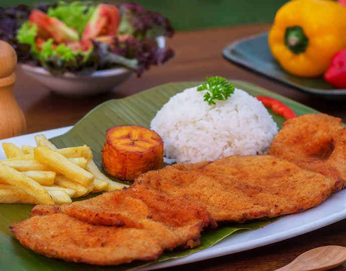
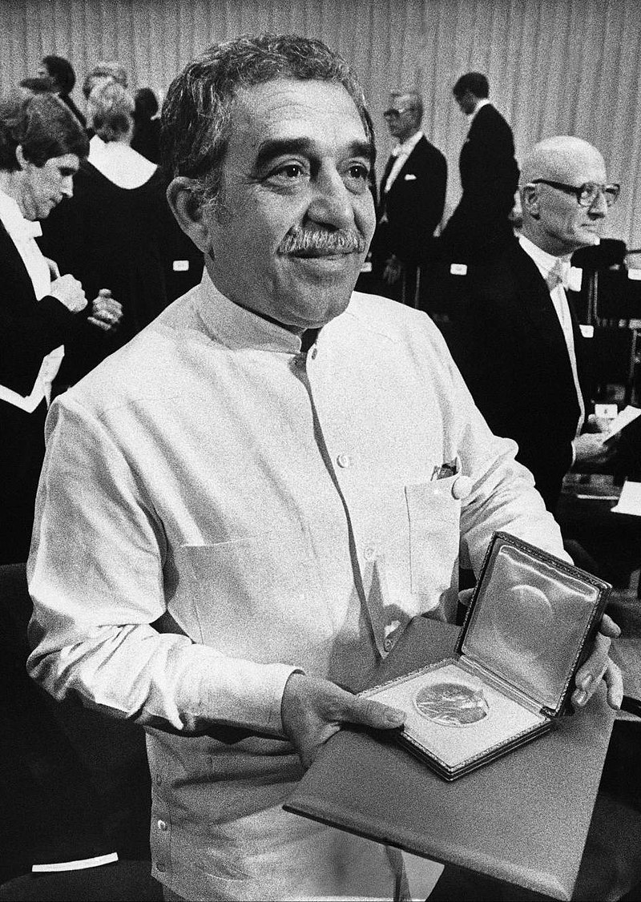

-

Chuleta Valluna - Prato Típico Colombiano
-
A culinária colombiana tem forte presença do milho além de
outros tubérculos. Uma fruta comum nos pratos do país é o
abacate. Os pratos típicos também levam maior quantidade de
temperos, porém não tanto como nas culinárias indiana ou
mexicana, por exemplo. A mandioca também está presente em
diversos pratos. A bebida mais comum e a marca da culinária
no país é o café. A gastronomia colombiana varia em cada uma
de suas regiões. Na região amazônica, a culinária é
caracterizada por ser à base de peixe, sendo o pirarucu um
dos mais consumidos. Um dos pratos mais representativos desta
região é a patarashca, um filé de peixe temperado com alho,
pimentão e cebola e assado envolto em folhas de bananeira;
quase sempre acompanhada por banana frita e farinha de
mandioca.
Na região de Paisa, o prato típico principal é a bandeja
paisa, se destacando também a antioquia sancocho, hogao,
antioquia tripe e pegao, enquanto que em Valle del Cauca,
o ensopado de frango, o arroz atolado e o pandebono são
mais consumidos.
-
Filme Garras de Oro de 1926
-
O cinema colombiano tem suas origens voltadas ao ano de
1897, sendo pouco rentável e com um destaque modesto ao
longo de sua história. Durante as primeiras décadas do
século XX, algumas empresas mantiveram um nível constante
de produção, mas a falta de apoio financeiro e a forte
concorrência estrangeira contribuíram para uma diminuição
significativa nas iniciativas de produções nacionais. A
Compañía de Fomento Cinematográfico (Focine) foi criada
na década de 1980, permitindo que algumas produções
colombianas fossem realizadas. No entanto, a organização
teve de ser fechada no início dos anos 1990. Uma lei de
incentivo à produção cinematográfica nacional, aprovada
em 2003, tem garantido a manutenção da indústria de
cinema no país, assim como a realização e produção de
filmes e curta-metragens.
-

Gabriel García Marquez
-
Livros Colombianos
-
A Colômbia é pátria de diversos escritores de renome
internacional, destacando-se entre estes Gabriel García
Márquez, Prêmio Nobel da Literatura, autor de livros como
Cem Anos de Solidão, Crônica de uma Morte Anunciada e O
Amor nos Tempos do Cólera. Também são importantes na
literatura do país autores como Jorge Isaacs (autor de
poemas, poesias e apenas um romance) e José María Vargas
Vila. Jesus Martín-Barbero é escritor espanhol, mas vive
no país desde 1963, aos 26 anos de idade.
-
Estádio Hernán Ramirez Villegas (Pereira)
-
Alguns dos esportes mais praticados na Colômbia são a patinação e
o futebol, sendo este o desporto mais popular. A melhor
participação do país em Olimpíadas, foi em 2000, quando María
Isabel Urrutia ganhou o ouro no halterofilismo, na categoria 75
quilos. A Seleção de futebol representa o país nas competições da
FIFA e da CONMEBOL. A Colômbia venceu a Copa América em 2001.
Também nasceu na Colômbia o ex-piloto de Fórmula 1, Juan Pablo
Montoya. No futebol colombiano, destacam-se muitos jogadores
tais como Carlos Valderrama, René Higuita, Falcão García e James
Rodríguez que disputou o prêmio de melhor do mundo de 2014 e James
Rodriguez que é considerado um dos melhores jovens futebolistas,
além do árbitro da FIFA Óscar Ruiz.